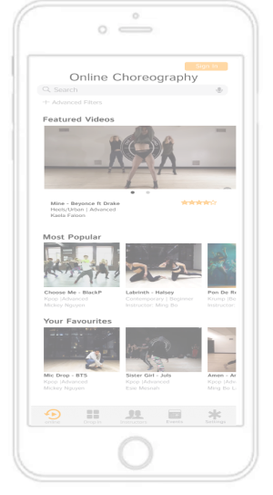

Wendy Lau
LinkUp
The Digital Dance Experience You've been Waiting for
Summary
In 2017, approximately 1.8 billion people around the world actively used a personal cloud storage service. My role as a designer was to allow users to share infrmation and expand their social networks through theirshare love of dance. After user research, testing, and many iterations, LinkUp – a mobile app designed for the Toronto urban dance scene, was created.
Problem
Although the opportunities in the cloud are vast, the root problem is the client’s lack clear vision for the project, direction for the name/brand, preference for platform (app/desktop browser), and undefined target audience.
Solution

The final recommendation was LinkUp, a mobile app that aims to join the urban dance community together through the shared loved of dance and movement. The target audience is the fresh young demographic of adolescents and young adults looking for dance classes and events around the city, especially for those that don’t have the time to always make it to the dance studio. The selling feature is the suite of online features including online dance tutorials (available through monthly subscription), online mentorship services. An integrated menu of all drop-in classes across Toronto, and a dance events page is another convenience offered by LinkUp’s easy to use platform.
Competitive Analysis
To understand the competitive environment, a competitive analysis was conducted between three popular dance apps/websites:
- TmillyTV
- Steezy Studio
- Danceplug.com
Collectively, the following opportunities were drawn, that could be potentially combined are taken into the design of the new LinkUp app:
- Ability to save and share video choreography with other users and non-users through various channels (email, social media etc.)
- Include organizational features to classify saved content
- Have video mentoring feature available for dance video feedback
- Design both website and mobile app platforms, mobile platform should be given priority since the target audience is directed towards the younger demographic
- Have ways to customize app to user’s preference
- Integrate an interactive component of the app i.e. blog, community section etc, where users can comment/share posts
- Charge a premium for users who would like to post an event/audition including access to analytics etc.
User Personas
The following user personas were created to design a flexible product appeal to a broad range of users.


User Stories + Flows
Creating user stories was the first step to understanding which stories would need to be prioritized and further detailed through user flows. The following user stories were detailed with user flows.


Wireframes + High-Fidelity Mockups
Two iterations of wireframes were assembled to improve clarify design thinking. You can see the sketches and wireframes detailed below.
Sketches


Wireframe Iteration 1

The main piece of feedback here was the lack of detail. For example, in many of the form details it was unclear what the content should be to the senior designer. There was also inconsistent colouring for fields, some had white backgrounds and a black border whereas others were simply grey. Images were also not adhering to common aspect ratios which would cause distortions down the road when images would eventually be placed in the high-fidelity mockups. The sizing of the typography was also inconsistent for mobile app standards. These were all fixes that were implemented for the second wireframe iteration.
Wireframe Iteration 2

Branding Strategy


Branding work was layered and inspired in different phases. The moodboard provided inspiration to influence the textures and young exuberant energy of the brand. You can see the digital moodboard here: http://www.gomoodboard.com/boards/W0V9RD0x/share The final logo design and Branding guidelines are below. In short, the colours, design, and typography of LinkUp’s brand seek to inspire free movement. The main tenants of the brand are fluidity, clarity, and cohesiveness. Orange is the primary colour that represents vibrance, physical activity, competition, and confidence.
Final Prototype

User Testing
There were two iterations of preference testing to test different aspects of the app such as button fill colour, visual presentation of content, selector styles etc. There were three major learnings from testing that allowed me to further enhance the look and feel of the app.

Conclusion
The best part of the case study was the feedback loops from potential users. In person and remote testing and preference testing collected the most valuable data points which user research and competitive analysis could never provide. Being able to see the part of the process where a user was stuck or receiving feedback on how a feature of an app such as a button or layout of video affected a user’s perception and even functionality of an app was incredibly eye-opening.
The project taught me a lot about the intricacies of the design process and the importance of continuous feedback. Without the former and the latter, the final product would never live up to the potential of the idea. Not only is it necessary to have a consistent and balanced design but it is equally important also consider the needs of the user and integrate these new insights into the future iterations of the design.